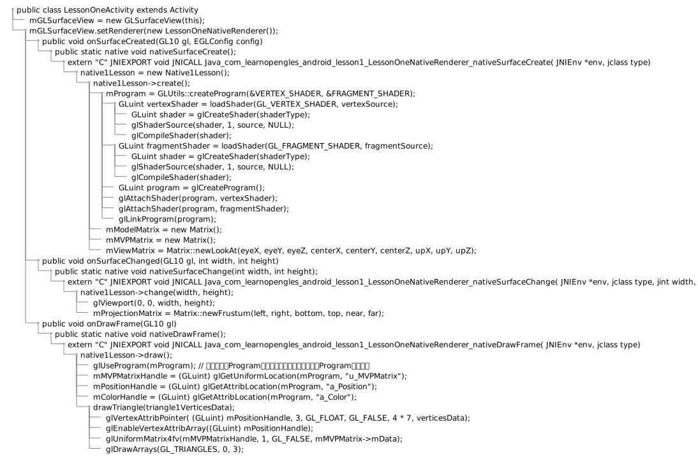

OpenGL
OpenGL Android绘图
参考文档
Tutorials指令集修改内容
ndk{
abiFilters "arm64-v8a"
}
externalNativeBuild {
cmake {
cppFlags "-frtti -fexceptions"
arguments "-DANDROID_PLATFORM_LEVEL=${platformVersion}",
'-DANDROID_TOOLCHAIN=clang', '-DANDROID_STL=c++_shared'
}
}
简要介绍
* public class LessonOneActivity extends Activity
* mGLSurfaceView = new GLSurfaceView(this);
* mGLSurfaceView.setRenderer(new LessonOneNativeRenderer());
* public void onSurfaceCreated(GL10 gl, EGLConfig config)
* public static native void nativeSurfaceCreate();
* extern "C" JNIEXPORT void JNICALL Java_com_learnopengles_android_lesson1_LessonOneNativeRenderer_nativeSurfaceCreate( JNIEnv *env, jclass type)
* native1Lesson = new Native1Lesson();
* native1Lesson->create();
* mProgram = GLUtils::createProgram(&VERTEX_SHADER, &FRAGMENT_SHADER);
* GLuint vertexShader = loadShader(GL_VERTEX_SHADER, vertexSource);
* GLuint shader = glCreateShader(shaderType);
* glShaderSource(shader, 1, source, NULL);
* glCompileShader(shader);
* GLuint fragmentShader = loadShader(GL_FRAGMENT_SHADER, fragmentSource);
* GLuint shader = glCreateShader(shaderType);
* glShaderSource(shader, 1, source, NULL);
* glCompileShader(shader);
* GLuint program = glCreateProgram();
* glAttachShader(program, vertexShader);
* glAttachShader(program, fragmentShader);
* glLinkProgram(program);
* mModelMatrix = new Matrix();
* mMVPMatrix = new Matrix();
* mViewMatrix = Matrix::newLookAt(eyeX, eyeY, eyeZ, centerX, centerY, centerZ, upX, upY, upZ);
* public void onSurfaceChanged(GL10 gl, int width, int height)
* public static native void nativeSurfaceChange(int width, int height);
* extern "C" JNIEXPORT void JNICALL Java_com_learnopengles_android_lesson1_LessonOneNativeRenderer_nativeSurfaceChange( JNIEnv *env, jclass type, jint width, jint height)
* native1Lesson->change(width, height);
* glViewport(0, 0, width, height);
* mProjectionMatrix = Matrix::newFrustum(left, right, bottom, top, near, far);
* public void onDrawFrame(GL10 gl)
* public static native void nativeDrawFrame();
* extern "C" JNIEXPORT void JNICALL Java_com_learnopengles_android_lesson1_LessonOneNativeRenderer_nativeDrawFrame( JNIEnv *env, jclass type)
* native1Lesson->draw();
* glUseProgram(mProgram); // 激活指定的Program，接下来的绘制会使用指定的Program进行渲染
* mMVPMatrixHandle = (GLuint) glGetUniformLocation(mProgram, "u_MVPMatrix");
* mPositionHandle = (GLuint) glGetAttribLocation(mProgram, "a_Position");
* mColorHandle = (GLuint) glGetAttribLocation(mProgram, "a_Color");
* drawTriangle(triangle1VerticesData);
* glVertexAttribPointer( (GLuint) mPositionHandle, 3, GL_FLOAT, GL_FALSE, 4 * 7, verticesData);
* glEnableVertexAttribArray((GLuint) mPositionHandle);
* glUniformMatrix4fv(mMVPMatrixHandle, 1, GL_FALSE, mMVPMatrix->mData);
* glDrawArrays(GL_TRIANGLES, 0, 3);

数据适配、解析
Shader
const char *VERTEX_SHADER = "uniform mat4 u_MVPMatrix; \n" // A constant representing the combined model/view/projection matrix. "attribute vec4 a_Position; \n" // Per-vertex position information we will pass in. "attribute vec4 a_Color; \n" // Per-vertex color information we will pass in. "varying vec4 v_Color; \n" // This will be passed into the fragment shader. "void main() \n" // The entry point for our vertex shader. "{ \n" " v_Color = a_Color; \n" // Pass the color through to the fragment shader. " gl_Position = u_MVPMatrix * a_Position; \n" // gl_Position is a special variable used to store the final position. "} \n"; // normalized screen coordinates. const char *FRAGMENT_SHADER = "precision mediump float; \n" // Set the default precision to medium. We don't need as high of a "varying vec4 v_Color; \n" // This is the color from the vertex shader interpolated across the "void main() \n" // The entry point for our fragment shader. "{ \n" " gl_FragColor = v_Color; \n" // Pass the color directly through the pipeline. "} \n";
Vertices
// This triangle is red, green, and blue. GLfloat triangle1VerticesData[] = { // X, Y, Z, // R, G, B, A -0.5f, -0.25f, 0.0f, // attribute vec4 a_Position; 1.0f, 0.0f, 0.0f, 1.0f, // attribute vec4 a_Color; 0.5f, -0.25f, 0.0f, 0.0f, 0.0f, 1.0f, 1.0f, 0.0f, 0.559016994f, 0.0f, 0.0f, 1.0f, 0.0f, 1.0f};
Data adaptation format
glVertexAttribPointer( (GLuint) mPositionHandle, 3, // X, Y, Z GL_FLOAT, GL_FALSE, 4 * 7, // 4 byte(float size) * 7 (X, Y, Z, R, G, B, A) verticesData ); glEnableVertexAttribArray((GLuint) mPositionHandle); glVertexAttribPointer( (GLuint) mColorHandle, 4, // R, G, B, A GL_FLOAT, GL_FALSE, 4 * 7, // 4 byte(float size) * 7 (X, Y, Z, R, G, B, A) verticesData + 3 // 3 float(X, Y, Z) offset ); glEnableVertexAttribArray((GLuint) mColorHandle);